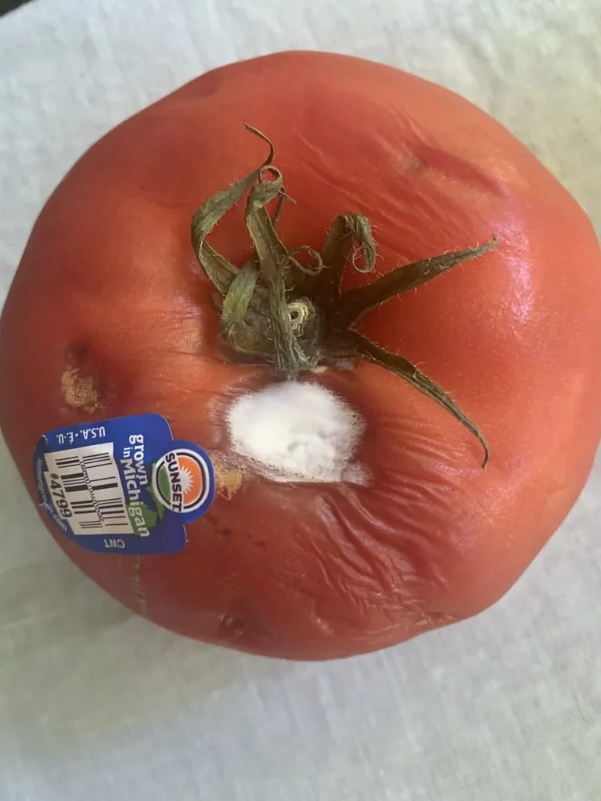

真菌 · 真菌界
青霉菌 Penicillium chrysogenum

青霉菌的菌落多呈青绿色，能产生青霉素，是人类发现抗生素的起点，也是食品和工业中常见的霉菌。
- 分类
- 门子囊菌门纲散囊菌纲目散囊菌目科曲霉科属青霉属
- 栖息环境
- 土壤、空气、粮食、水果与腐败食品，温暖潮湿处常见
- 地理分布
- 世界性分布，各地均有
- 保护级别
- 暂无评估（工业微生物）
物种志
青霉菌是子囊菌门曲霉科的真菌，菌丝有隔膜，分生孢子梗呈扫帚状分枝，顶端着生成串的分生孢子，孢子多为青绿色，使菌落呈青绿色或蓝绿色。菌落表面呈绒毛状或粉末状，边缘白色。青霉菌在自然界分布极广，是常见的腐生真菌。
1928 年，英国细菌学家弗莱明发现青霉菌能抑制葡萄球菌生长，从而发现了青霉素，开启了抗生素时代，青霉菌因此闻名于世。青霉菌广泛存在于土壤、空气和腐败的食物上，会使面包、水果、柑橘等发霉；某些种类会产生展青霉素等毒素，食用发霉食物有健康风险。同时，青霉菌在工业上用于生产青霉素、柠檬酸和干酪发酵剂，是重要的工业微生物。
形态与习性
- 菌落青绿色或蓝绿色，绒毛状
- 分生孢子扫帚状分枝，成串着生
- 著名产物青霉素
- 工业用途生产青霉素、柠檬酸与干酪发酵剂
- 危害可使食物发霉，部分产生毒素
- 分布世界性广布
趣味知识
- 1928 年弗莱明从青霉菌中发现了青霉素，开启了抗生素时代。
- 青霉菌的孢子梗像一把小扫帚，是辨认它的特征。
- 青霉菌会让面包、水果发霉，部分种类还会产生毒素。